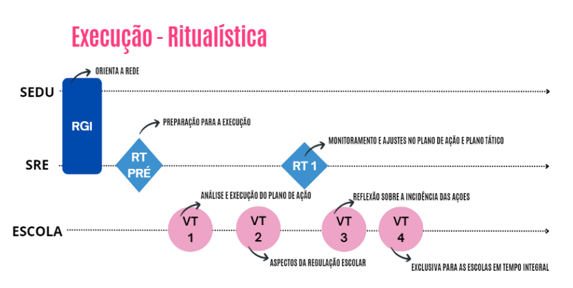

EXECUÇÃO
1. A importância da Execução
A etapa de Execução representa o momento em que os compromissos pactuados se transformam em ações concretas. Nesta fase, a prioridade é a implementação e o acompanhamento das ações previstas na etapa de Planejamento, com foco no alcance das metas educacionais estabelecidas.
No âmbito da Superintendência Regional de Educação (SRE), o trabalho deve estar orientado pelo Plano de Ação e pelo Plano Tático da regional, sendo conduzido de forma articulada com as escolas e com a Secretaria de Educação.
Acompanhamento das Ações e Indicadores
Durante essa etapa, a regional é responsável por:
- Monitorar a execução das ações planejadas, tanto no nível da própria regional quanto nas escolas que lhe são vinculadas;
- Coletar e analisar evidências que indiquem se as ações estão sendo executadas conforme o previsto, se estão contribuindo para o alcance das metas e se há necessidade de ajustes;
- Mapear avanços, riscos e dificuldades enfrentadas ao longo da implementação;
- Propor ajustes no Plano de Ação e no Plano Tático, sempre que necessário, com base em evidências concretas e na escuta ativa dos envolvidos.
O monitoramento deve estar centrado nos indicadores estruturantes definidos pela Secretaria de Educação, que norteiam tanto o acompanhamento das ações quanto a análise da efetividade dos processos:
- Aula dada: representa a garantia de que os conteúdos previstos estão sendo trabalhados em sala de aula;
- Frequência dos estudantes: permite acompanhar a presença dos alunos e antecipar riscos de evasão;
- Notas: refletem o desempenho dos estudantes e servem como parâmetro para intervenções pedagógicas.
Além desses indicadores, é fundamental acompanhar os resultados das avaliações externas aplicadas pela Secretaria — Diagnóstica, AMA e PAEBES —, que oferecem dados valiosos sobre a aprendizagem dos estudantes ao longo do ano letivo. A regional e as escolas devem garantir a ampla participação dos estudantes nessas avaliações, assegurando que os resultados reflitam a realidade de cada território.
Essas informações devem ser utilizadas para embasar decisões pedagógicas, promover ajustes nas estratégias de ensino e orientar o trabalho dos profissionais da educação em cada etapa do processo.
Foco no Plano Tático
No que se refere ao Plano Tático da regional, o monitoramento deve estar voltado aos indicadores de processo das prioridades estabelecidas pela Secretaria de Educação. Esses indicadores representam as condições mínimas para que todas as instâncias da rede — Secretaria, regionais e escolas — atuem de forma alinhada e estratégica, com foco no alcance dos objetivos institucionais.
Cabe à regional acompanhar o desempenho de cada escola em relação ao seu Plano de Ação, oferecendo suporte contínuo, orientações pedagógicas e sugestões de ajustes, quando necessário. Esse acompanhamento deve ocorrer em diálogo permanente com os diretores escolares e supervisores, respeitando as especificidades de cada contexto.
1.1 Execução e Monitoramento do Plano de Ação e do Plano Tático da Regional
A etapa de Execução marca o momento de transformar o planejamento em ação. É nela que a equipe da regional coloca em prática as tarefas previstas no Plano de Ação e realiza o acompanhamento contínuo da sua execução, bem como do Plano Tático.
Essa fase exige uma atuação estratégica da equipe gestora, que deve garantir o cumprimento dos prazos, a qualidade da execução e o alcance dos resultados esperados. Para isso, é essencial estabelecer uma rotina estruturada de monitoramento e intervenção, envolvendo e engajando todos os profissionais da regional ao longo de todo o ano letivo.
O que monitorar?
Durante a execução, a regional deve observar tanto o andamento das ações quanto os indicadores que orientam o Circuito de Gestão, com foco em dois planos:
- Plano de Ação da regional e das escolas: monitorar os indicadores estruturantes — aula dada, frequência e nota dos estudantes.
- Plano Tático da regional: acompanhar os indicadores de processo vinculados às prioridades estratégicas da Secretaria de Educação.
Esse acompanhamento deve partir de quatro perguntas norteadoras:
- Avanços: O que já foi realizado? Quais resultados parciais foram obtidos em relação ao que foi planejado?
- Próximos passos: Quais tarefas precisam ser desenvolvidas a seguir?
- Riscos e problemas: Quais dificuldades estão afetando a execução? Os riscos envolvem prazos, qualidade ou execução? Algum risco já está sendo tratado?
- Ajustes no planejamento: Quais ações precisam ser revistas com base no que foi observado até aqui?
Essas análises permitirão ajustar rotas com agilidade, promovendo correções no Plano de Ação e no Plano Tático sempre que necessário, com base em evidências concretas e no contexto de cada território.
Etapas fundamentais da Execução
A execução e o monitoramento do Plano de Ação da regional se desdobram em três movimentos centrais, realizados de forma articulada nas Reuniões de Trabalho (RTs) previstas no cronograma do Circuito de Gestão:
- Organização da Etapa de Execução
A regional deve preparar e conduzir a RT-Pré-Etapa, momento de planejamento interno em que a equipe define prioridades, responsabilidades e estratégias de acompanhamento para o período. - Monitoramento do Plano de Ação e do Plano Tático
O monitoramento ocorre de forma sistemática e articulada, tanto em relação às ações da regional quanto às das escolas vinculadas. A equipe deve manter uma escuta ativa com os supervisores escolares e gestores escolares, acompanhando evidências, identificando gargalos e promovendo intervenções pontuais. - Ajuste do Plano de Ação e do Plano Tático da Regional
Com base nas análises realizadas ao longo da etapa, a equipe gestora deve identificar a necessidade de ajustes e formalizar as alterações no sistema, garantindo que os planos reflitam as condições reais de execução e os caminhos mais adequados para o alcance das metas.
1.2 Monitoramento da Execução dos Planos de Ação das Escolas
Imagem 6 - Execução Ritualística

Durante a etapa de Execução, a regional tem a responsabilidade de acompanhar sistematicamente o desenvolvimento dos Planos de Ação das escolas. Esse monitoramento é realizado por meio da atuação dos supervisores escolares de referência, que devem acompanhar as unidades de forma contínua, ágil e focada em prioridades, contribuindo para a qualificação das ações planejadas e para o alcance dos resultados esperados.
O objetivo desse acompanhamento é compreender como as ações estão sendo executadas, verificar se os resultados esperados estão sendo alcançados e identificar riscos ou problemas que possam comprometer o andamento do plano. Para isso, é necessário observar com atenção:
- O ritmo de execução das tarefas;
- As condições de trabalho nas escolas;
- A aderência das ações aos desafios priorizados;
- Os efeitos gerados sobre os indicadores estruturantes: aula dada, frequência e notas dos estudantes.
Esse olhar investigativo permite identificar gargalos e oportunidades de melhoria, que serão aprofundados com o apoio dos dados registrados no sistema SMAR e servirão como base para a tomada de decisões na etapa de Correção de Rotas.
Pontos-chave para análise
Durante as Visitas Técnicas (VTs), o supervisor escolar deverá promover reflexões junto à equipe gestora da escola com base nos seguintes aspectos, conforme orientações do Protocolo do Supervisor Escolar:
- Percentual de frequência dos estudantes;
- Estratégias de acolhimento e permanência;
- Qualidade e regularidade das aulas dadas;
- Interação entre professores e estudantes;
- Ações de intervenção pedagógica realizadas;
- Desempenho dos estudantes nas avaliações (Diagnóstica, AMA, Paebes e resultados trimestrais);
- Identificação de diferentes contextos de aprendizagem.
Essas análises devem estar diretamente ligadas aos desafios priorizados pela escola e ao impacto real das ações planejadas sobre a aprendizagem dos estudantes.
Reuniões de Trabalho (RTs): alinhamento e estratégia
Para organizar o monitoramento e fortalecer a execução, a regional promoverá Reuniões de Trabalho (RTs) específicas para essa etapa. Esses encontros reúnem a equipe gestora da regional, os supervisores escolares de referência e demais servidores da SRE envolvidos nas ações.
As RTs funcionam como marcadores de tempo do Circuito de Gestão, permitindo alinhar estratégias, promover análises em conjunto e manter a execução dos Planos de Ação no caminho certo. Nesses momentos, são discutidos os principais avanços, desafios e ajustes necessários, sempre com base nos indicadores estruturantes e nas evidências coletadas em campo.
As RTs da etapa de Execução estão organizadas da seguinte forma:
| Organização para Execução e Monitoramento | RT (PRÉ-ETAPA) | Organização e preparação das equipes da regional para o início da etapa de Execução. |
|---|---|---|
| Monitoramento e ajustes no Plano de Ação e Plano Tático da Regional e Indicações Para Ajustes no Plano de Ação das Escolas | RT-1 |
|
2. RT Pré-Etapa: Organização para o Início da Execução
A Reunião de Trabalho (RT) Pré-Etapa marca a preparação da equipe regional para o início da etapa de Execução do Circuito de Gestão. Esse momento é essencial para alinhar diretrizes, revisar informações-chave e garantir que os supervisores escolares estejam prontos para acompanhar as escolas com foco, estratégia e agilidade.
Objetivo
Preparar a equipe da regional para iniciar a etapa de Execução com base em dados, prioridades e foco nos resultados da aprendizagem.
Quando acontece
Ao final da etapa de Planejamento e antes do início da etapa de Execução, conforme o cronograma do Circuito de Gestão.
2.1. Roteiro da RT Pré-Etapa
A) Preparação do Supervisor Escolar
Antes da RT, o supervisor escolar deve se preparar com base em sete ações principais:
1. Estudar o Protocolo
Revisar o Protocolo do Circuito de Gestão Capixaba – Etapa de Execução – Supervisor Escolar, compreendendo suas diretrizes, objetivos e foco.
2. Analisar os Planos de Ação das escolas
Acessar o sistema do Circuito de Gestão para revisar os Planos de Ação das escolas sob sua referência, verificando o andamento das ações, o cumprimento das tarefas e a entrega dos produtos parciais.
3. Estudar os resultados da Avaliação Diagnóstica
Analisar quais competências e habilidades os estudantes já consolidaram e quais ainda exigem reforço, utilizando essas informações para orientar intervenções pedagógicas mais eficazes.
4. Analisar os resultados da AMA
Avaliar os dados da Avaliação de Monitoramento da Aprendizagem (AMA), como subsídio à preparação dos estudantes para as provas do Sistema de Avaliação da Educação Básica (SAEB) e Programa de Avaliação da Educação Básica do Espírito Santo (PAEBES).
5. Estudar os resultados do Paebes
Interpretar os resultados do Paebes, que refletem a consolidação das aprendizagens ao final de cada etapa, com foco na melhoria das ações pedagógicas.
6. Avaliar os relatórios de frequência
Verificar os dados de frequência dos estudantes, identificando padrões de participação e possíveis desafios que exijam intervenção.
7. Elaborar a pauta da reunião com foco reflexivo
Com base nas análises anteriores e nas orientações dos Protocolos do Supervisor Escolar e da Equipe Regional, o supervisor deve propor uma pauta reflexiva que oriente:
- As discussões nas Visitas Técnicas (VTs);
- O monitoramento dos indicadores estruturantes (aula dada, frequência e nota);
- A análise dos resultados das avaliações externas (Diagnóstica, AMA, PAEBES);
- O acompanhamento das prioridades do Plano Tático da regional;
- A execução das ações nas escolas, considerando sua realidade específica.
B) Preparação da Equipe Gestora da Regional para a RT Pré-Etapa
A equipe gestora da regional também precisa se organizar estrategicamente antes da realização da RT. Essa preparação garante o alinhamento entre os supervisores escolares e o fortalecimento do acompanhamento pedagógico nas escolas.
A seguir, os passos essenciais dessa preparação:
1. Estudar o Protocolo da Etapa de Execução
Apropriar-se do conteúdo do Protocolo do Circuito de Gestão – Supervisor Escolar, compreendendo suas diretrizes e instrumentos.
2. Padronizar o monitoramento de indicadores
Definir como será feito o acompanhamento dos indicadores estruturantes (aula dada, frequência e nota dos estudantes), dos indicadores de processo das prioridades do Plano Tático e da execução dos Planos de Ação das escolas. A padronização é essencial para garantir a coerência entre os supervisores.
3. Planejar as intervenções pedagógicas
Com base nos dados das avaliações externas, identificar quais intervenções pedagógicas devem ser priorizadas nas escolas e orientar os supervisores sobre como implementá-las.
4. Definir o instrumento de monitoramento do Plano Tático
Elaborar um instrumento para acompanhar os indicadores do Plano Tático da regional. É necessário indicar quem será responsável por coletar os dados e qual será a frequência da coleta.
5. Organizar a orientação às escolas
Definir de que forma as escolas serão orientadas para realizarem seu próprio monitoramento, garantindo clareza e apoio técnico.
6. Estruturar a rotina de avaliação da regional
Estabelecer uma rotina contínua de monitoramento e avaliação dos processos internos da regional, com foco em melhorias constantes e respostas ágeis.
C) Realização da RT Pré-Etapa
Na condução da RT Pré-Etapa, a equipe regional deve promover um momento de orientação, alinhamento e tomada de decisões práticas. Esse encontro fortalece a execução do Circuito de Gestão nas escolas.
Durante a RT, devem ser abordados os seguintes pontos:
1. Explicar como será feito o monitoramento
Apresentar a metodologia e os critérios que serão usados para acompanhar os indicadores estruturantes, os processos do Plano Tático e a execução dos Planos de Ação escolares.
2. Compartilhar a rotina de avaliação da regional
Expor o fluxo definido para o acompanhamento contínuo dos processos e resultados, promovendo transparência e comprometimento coletivo.
3. Analisar os dados das avaliações externas
Discutir os resultados da Avaliação Diagnóstica, AMA e Paebes, e indicar quais serão as prioridades das intervenções pedagógicas a serem acompanhadas pelos supervisores escolares.
4. Definir a pauta das Visitas Técnicas (VTs)
Construir, de forma alinhada ao Protocolo do Supervisor Escolar e Regional, a pauta que orientará as VTs nas escolas ao longo da etapa de Execução.
5. Registrar a ata da RT no sistema
Finalizar o encontro com o devido registro da ata no sistema de referência do Circuito de Gestão, garantindo a formalização das decisões.
Papel da Regional na Execução
A regional não deve apenas executar seu próprio Plano de Ação. Ela também é responsável por acompanhar de perto a implementação dos planos de ação das escolas vinculadas. Esse acompanhamento precisa ser sensível, eficiente e focado em solucionar os desafios identificados.
Ao apoiar ativamente as escolas, a regional fortalece a atuação da rede, promovendo respostas rápidas e ações pedagógicas mais efetivas.
3. RT-1: Monitoramento e Ajustes
Objetivo
Acompanhar a execução dos planos de ação das escolas e as prioridades do Plano Tático da regional, além de monitorar os principais indicadores estruturantes da aprendizagem.
Período
Durante a etapa de Execução, conforme o calendário previsto pelo Circuito de Gestão.
A) Preparação do Supervisor Escolar para a RT-1
Antes da realização da RT-1, o supervisor escolar precisa reunir informações e analisar os dados disponíveis no sistema para conduzir um monitoramento estratégico e propor ajustes com base nas evidências.
Etapas de preparação:
1. Acompanhar a execução dos Planos de Ação das escolas
Verificar os relatórios disponíveis no sistema de referência do Circuito de Gestão para entender o andamento de cada escola sob sua responsabilidade.
2. Monitorar os indicadores estruturantes
Avaliar o cumprimento da carga horária prevista, a frequência dos estudantes e os resultados de aprendizagem, identificando padrões ou desvios significativos.
3. Acompanhar os indicadores do Plano Tático da regional
Observar se as prioridades do Plano Tático estão sendo implementadas conforme o planejado, com foco nos indicadores de processo.
4. Analisar os resultados das avaliações externas
Verificar os dados mais recentes das avaliações externas aplicadas durante a etapa de Execução e relacioná-los aos avanços ou dificuldades das escolas.
5. Identificar desafios e riscos no monitoramento dos indicadores
Reconhecer escolas com maior dificuldade no cumprimento das metas ou que apresentem risco de não alcançar os resultados esperados. Essas situações devem ser priorizadas na agenda de apoio da regional.
6. Revisar o Registro da Avaliação da Execução
Consultar o Anexo 2 do Protocolo do Supervisor e destacar os principais pontos que precisam ser discutidos na RT-1, com foco em melhorias.
7. Levantar dificuldades na execução dos Planos de Ação
Mapear as principais barreiras enfrentadas pelas escolas, sinalizando aquelas que precisam de apoio direto e contínuo da regional.
8. Sugerir ajustes nos Planos de Ação das escolas
Preparar propostas de pequenas adaptações e intervenções que possam ser analisadas nas Visitas Técnicas (VTs), com base nos dados monitorados e nas realidades locais.
B) Preparação da Equipe Gestora da Regional para a RT-1
A equipe da regional também precisa se preparar para garantir que a RT-1 seja um momento estratégico de análise e tomada de decisão.
1. Acompanhar a execução do Plano de Ação da regional
Verificar os avanços e identificar pontos que precisam de revisão ou reforço.
2. Monitorar os indicadores do Plano Tático da regional
Analisar os dados coletados pelos supervisores para avaliar o desempenho das prioridades.
3. Orientar os supervisores para a consolidação das informações
Apoiar a sistematização dos dados e garantir que os principais pontos das escolas estejam organizados para a discussão.
4. Acompanhar a realização das Visitas Técnicas (VTs)
Identificar demandas emergentes nas escolas e oferecer os apoios necessários para que a atuação dos supervisores seja fortalecida.
C) Realização da RT-1
A RT-1 é o momento de consolidar os dados e transformar as análises em ações práticas e coordenadas.
1. Identificar as escolas com maiores desafios
Analisar os dados enviados pelos supervisores e destacar as escolas com piores resultados nas avaliações externas, nos indicadores estruturantes e na execução do Plano de Ação. Definir as intervenções pedagógicas necessárias.
2. Avaliar a atuação dos supervisores escolares
Identificar profissionais que precisam de apoio para conduzir as ações nas escolas e planejar estratégias para fortalecê-los.
3. Discutir os principais desafios da execução dos Planos de Ação
Refletir sobre os riscos identificados e estruturar os apoios que a regional precisa oferecer para garantir avanços.
4. Monitorar a execução do Plano de Ação da regional
Revisar os dados e identificar barreiras que possam comprometer a efetividade do planejamento regional.
5. Analisar os indicadores do Plano Tático da regional
Observar os pontos de maior fragilidade e discutir formas de mitigar os riscos.
6. Definir ajustes nos Planos de Ação
Propor pequenas alterações nas ações das escolas e da regional, indicando responsáveis e prazos para implementação.
4. Avaliação Final da Etapa de Execução
Ao final de cada etapa de Execução, é essencial registrar os aprendizados e consolidar os dados:
- Sistematize os destaques, desafios e necessidades de apoio das escolas.
Utilize essas informações para embasar decisões e ajustes nas próximas etapas.
Balanço da Execução do Ano
No encerramento do 3º ciclo do Circuito de Gestão, é indicado realizar o Balanço da Execução do ano letivo. Essa análise final deve considerar:
- A execução dos Planos de Ação das escolas e da regional ao longo dos três trimestres.
- A incidência das ações sobre os desafios identificados e os componentes do IDEBES.
- O levantamento de lições aprendidas, avanços e dificuldades enfrentadas.
- A coleta de insumos para replanejar o ano seguinte e potencializar os resultados educacionais.
Esse momento é estratégico para fomentar reflexões e garantir que o planejamento futuro seja ainda mais assertivo, sensível às realidades das escolas e orientado por evidências.
1.3. Balanço da Execução
O Balanço da Execução marca o encerramento do ano letivo e tem como objetivo avaliar, de forma estruturada e detalhada, a execução dos Planos de Ação das escolas e da regional. Esse momento é essencial para analisar o que funcionou, o que precisa ser ajustado e quais estratégias devem ser fortalecidas no planejamento do próximo ano.
Mais do que um fechamento, o Balanço oferece uma base sólida para decisões estratégicas, contribuindo para o aprimoramento contínuo das ações educacionais.
A Reunião de Trabalho (RT) do Balanço da Execução deve contemplar dois momentos principais:
1. Avaliação da execução do Plano de Ação da regional
Analisar os avanços alcançados, as dificuldades enfrentadas e os pontos do plano que precisam ser aprimorados. A partir disso, é possível identificar aprendizados e ajustes que fortalecem a atuação da regional.
2. Avaliação da execução dos Planos de Ação das escolas
Refletir sobre os resultados das escolas, reconhecer os progressos e definir o que pode ser melhorado. Essa etapa também orienta a definição de diretrizes para o novo ciclo de planejamento escolar.
As análises realizadas durante o Balanço devem considerar os dados sistematizados ao longo dos três ciclos do Circuito de Gestão, incluindo os registros das etapas de Execução, SMAR e Correção de Rotas. O foco deve estar na compreensão do impacto das ações sobre os principais desafios educacionais e sobre os componentes do IDEBES.
| 1. Análise dos Resultados |
|
| 2. Reflexão Sobre os Avanços e os Desafios na Execução das Ações |
|
| 3. Proposição de Estratégias de Ajustes |
|
O Balanço da Execução está estruturado da seguinte forma:
| Avaliação da Execução das Ações Planejadas no Plano de Ação | RT - Balanço da Execução (Última RT do CdG - 3º Ciclo) |
|
| Orientação para a Realização do Balanço da Execução das Ações Planejadas no Plano de Ação das Escolas | RGI (Última RGI do CdG) |
|
5. RT-2: Balanço da Execução
Objetivo
Avaliar a execução do Plano de Ação ao final do ano letivo, considerando:
- a efetividade das ações realizadas,
- a qualidade das entregas,
- o alcance dos resultados esperados,
- e os aprendizados que podem orientar o planejamento do próximo ano.
Período
A RT-2 acontece no terceiro ciclo, durante a etapa de Execução III, como última Reunião de Trabalho do ano — conforme previsto no cronograma do Circuito de Gestão.
A) Preparação do Supervisor Escolar para a RT do Balanço da Execução
O supervisor escolar deve:
- Acompanhar e orientar a realização do Balanço da Execução nas escolas sob sua referência.
- Apoiar a análise dos resultados com as equipes escolares.
-
Identificar os principais desafios enfrentados na execução do Plano de Ação, considerando os resultados obtidos em fluxo, IDEBES e IDEB.
-
Sistematizar os registros das Visitas Técnicas do Balanço da Execução, com foco no planejamento do próximo ano letivo.
- Analisar dados relacionados a aulas dadas, frequência e notas dos estudantes ao longo do ano.
- Avaliar o padrão de desempenho nas avaliações externas (Diagnóstica, AMA, Paebes e Saeb).
- Consolidar todas as informações e sugestões para o próximo ciclo de planejamento e compartilhá-las na RT da regional.
Utilize as reflexões propostas no material de apoio para aprofundar a análise da execução do Plano de Ação e entender seu impacto sobre os resultados educacionais.
B) Preparação da Equipe Gestora para a RT do Balanço da Execução
A equipe gestora deve:
- Analisar a execução das ações previstas no Plano de Ação e no Plano Tático da regional.
- Identificar os principais desafios enfrentados e os resultados obtidos no fluxo, IDEBES e IDEB.
- Examinar atentamente os indicadores de aulas dadas, frequência e notas dos estudantes na rede.
- Avaliar o desempenho nas avaliações externas e identificar padrões de avanço, estagnação ou retrocesso entre as escolas.
- Organizar a pauta da RT da regional com base nos dados consolidados da VT do Balanço da Execução das escolas.
C) Realização da RT do Balanço da Execução com Equipes da Regional
Durante a Reunião de Trabalho, é necessário:
- Apresentar o consolidado das análises feitas pelas escolas e sistematizadas pelos supervisores.
- Destacar os principais desafios observados na execução dos Planos de Ação das escolas e no Plano Tático da regional.
- Definir quais desafios terão prioridade no planejamento do próximo ano, tanto para as escolas quanto para a atuação da regional.
- Propor melhorias para ações que obtiveram bons resultados e discutir estratégias para enfrentar os desafios recém-identificados.
- Identificar oportunidades para fortalecer ações de sucesso e ampliar seus impactos positivos.
- Registrar em ata os principais encaminhamentos e decisões tomadas na RT do Balanço da Execução.
1. Análise dos resultados
Comparação com anos anteriores e metas estabelecidas
- Como os resultados de fluxo e proficiência deste ano se comparam aos dos anos anteriores?
- Quais fatores podem ter influenciado esses avanços ou recuos?
- As metas estabelecidas foram atingidas?
- Que obstáculos surgiram ao longo do percurso? Como poderiam ser superados no próximo ciclo?
Indicadores estruturantes, avaliações externas e metas
- Que aprendizados foram extraídos da análise dos indicadores estruturantes e das avaliações externas?
- Há metas que precisam ser revistas?
- Quais indicadores apontam para a necessidade de ajustes nas estratégias adotadas?
Panorama das escolas da regional
- Quais escolas apresentaram avanços significativos? O que contribuiu para esse progresso?
- Quais ficaram estagnadas ou apresentaram retrocesso?
- Como essas escolas podem se beneficiar das estratégias bem-sucedidas adotadas por outras?
2. Disparidades educacionais: raça e gênero
- Quais diferenças nos resultados foram observadas entre estudantes de diferentes raças e gêneros?
- Que fatores podem estar contribuindo para essas desigualdades?
- Quais ações podem ser adotadas para reduzir essas disparidades e fortalecer a equidade educacional?
3. Equidade e inclusão
Ações implementadas e seus impactos
- Que estratégias foram adotadas para promover equidade e inclusão?
- Qual foi o impacto dessas ações sobre os resultados educacionais?
- Existem lacunas que ainda precisam ser enfrentadas?
- Que caminhos ou soluções podem ser construídos para avançar nesse aspecto?
4. Atuação do Conselho de Líderes
Engajamento estudantil e da comunidade escolar
- Como o Conselho de Líderes tem contribuído para envolver estudantes e comunidade escolar na melhoria dos resultados?
- Quais iniciativas foram bem-sucedidas?
- Que novas ações poderiam ser propostas para ampliar esse engajamento?
impacto e das condições que influenciam os resultados educacionais
6. Programas e projetos
Avaliação dos impactos nos resultados educacionais
- Quais programas e projetos implementados contribuíram de forma significativa para a melhoria dos resultados?
- Há projetos que não alcançaram os efeitos esperados? O que pode ser ajustado ou reconfigurado para melhorar sua eficácia?
Ajustes e melhorias com base nos resultados
- Que melhorias emergem como prioritárias a partir da análise dos dados?
- Como os aprendizados acumulados ao longo do ano podem ser aplicados para aperfeiçoar as práticas educacionais?
7. Formação de professores
Influência da formação continuada
- Como a formação dos professores tem refletido nos resultados educacionais?
- Quais aspectos da formação precisam ser revistos ou adaptados diante dos desafios identificados?
Áreas de destaque e pontos de atenção
- Quais práticas de formação mostraram bons resultados e podem ser reforçadas?
- Quais são as principais lacunas que precisam ser superadas e como isso pode ser feito de forma eficaz?
Desenvolvimento profissional contínuo
- Que estratégias de desenvolvimento profissional têm se mostrado mais eficazes? Como expandi-las?
- Quais obstáculos dificultam o aperfeiçoamento contínuo dos docentes? Que medidas práticas podem ser adotadas para superá-los?
8. Gestão escolar
Contribuição para os resultados educacionais
- De que forma a gestão das escolas tem impactado os resultados?
Quais práticas de gestão têm se mostrado mais eficazes na melhoria dos indicadores?
Áreas que exigem ajustes e formas de implementação
- Existem aspectos da gestão que precisam ser melhorados?
- Como essas mudanças podem ser colocadas em prática de forma estruturada e viável?
9. Infraestrutura escolar
Condições e impacto no aprendizado
- Como a infraestrutura escolar tem contribuído — ou dificultado — o aprendizado dos estudantes?
- Quais pontos da estrutura física precisam ser melhorados com urgência?
Alinhamento entre infraestrutura e necessidades pedagógicas
- Como é possível alinhar as melhorias na infraestrutura às demandas pedagógicas da escola?
- Que ações práticas podem ser realizadas para otimizar o ambiente escolar como espaço de aprendizagem?
10. Desafios a enfrentar
Principais obstáculos relacionados à gestão e infraestrutura
- Quais desafios estruturais ou organizacionais estão impactando negativamente os resultados educacionais?
- Como priorizar a resolução desses problemas?
Soluções inovadoras e caminhos para a superação
- Que soluções criativas e viáveis podem ser implementadas para enfrentar esses desafios?
- Como promover mudanças que realmente gerem impacto nos indicadores de aprendizagem?
6. Reflexão sobre os avanços e desafios na execução das ações
Esta seção propõe uma análise crítica sobre a implementação do Plano de Ação, considerando os principais resultados, dificuldades enfrentadas, estratégias aplicadas, além de identificar caminhos de aprimoramento com base nas evidências observadas.
Avaliação da execução das ações
Análise da implementação prevista x realizada
- As ações do Plano foram executadas conforme planejado?
- Que obstáculos comprometeram a implementação?
Propostas de melhoria
- O que pode ser feito para tornar a execução mais eficaz no próximo ciclo?
- Que ajustes operacionais ou estratégicos são necessários?
Desempenho por componentes curriculares ou áreas de conhecimento
Destaques positivos
- Quais componentes curriculares ou áreas do conhecimento apresentaram bons resultados?
- Que fatores contribuíram para esse desempenho?
Limitações identificadas
- Em quais componentes ou áreas os resultados ficaram abaixo do esperado?
- Como as práticas pedagógicas podem ser ajustadas para melhorar esses aspectos?
Eficácia das estratégias pedagógicas
Boas práticas comprovadas
- Quais estratégias pedagógicas demonstraram maior impacto no aprendizado?
- Como essas práticas podem ser replicadas em outras áreas?
Ajustes necessários
- Há estratégias que não surtiram o efeito desejado?
- Como reformulá-las para alcançar melhores resultados?
Indicadores de processos do Plano Tático
Leitura dos indicadores em relação às prioridades estratégicas
- Os indicadores de processo refletem avanço nas prioridades do Plano Tático?
- Há áreas que demandam mais atenção ou reforço?
Ajustes nos processos
- Quais mudanças são necessárias para alinhar melhor as ações aos objetivos estratégicos?
Avaliação da efetividade das ações
Ações com maior impacto
- Quais ações foram mais eficazes para atingir os resultados esperados?
- O que contribuiu para esse sucesso?
Ações com pouco impacto
- Que ações não trouxeram os resultados desejados?
- Como ajustá-las ou substituí-las por abordagens mais eficazes?
Feedback dos envolvidos
Análise dos retornos recebidos
- Que feedbacks foram mais frequentes entre os profissionais envolvidos na execução?
- Como esses retornos podem ser incorporados para melhorar o Plano?
Ampliação da escuta
- Como envolver mais participantes no processo de avaliação para obter feedbacks mais representativos e colaborativos?
Análise de dificuldades e causas de desvios
Identificação das causas
- Quais foram os principais motivos para desvios ou falhas na execução?
- Como esses problemas podem ser prevenidos em ciclos futuros?
Lições aprendidas
- Que aprendizados emergem desses desvios e como podem ser aplicados no planejamento do próximo ano?
Tendências e mudanças no contexto educacional
Análise do contexto
- Que tendências ou mudanças educacionais surgiram durante o ciclo de execução?
- De que forma essas transformações influenciaram os resultados?
Adaptação do Plano de Ação
- Como ajustar o Plano para torná-lo mais responsivo às mudanças no cenário educacional?
Avaliação da capacidade de execução
Limites e potencialidades da rede
- A rede apresentou capacidade adequada para executar as ações planejadas?
- Quais limitações foram identificadas durante a execução?
Recursos e condições necessárias
- Que recursos ou apoios adicionais são necessários para fortalecer a capacidade de execução no próximo ciclo?
7. Proposição de Estratégias de Ajustes
Avaliação dos resultados esperados e os resultados alcançados
Para compreender os avanços obtidos ao longo do ciclo, é essencial analisar até que ponto os resultados alcançados se aproximam das metas definidas no início do planejamento. Ao identificar diferenças entre o previsto e o realizado, torna-se possível entender os fatores que influenciaram esse cenário, sejam eles positivos ou desafiadores. Essa análise permite ajustar expectativas futuras com base em evidências, buscando um alinhamento mais realista entre objetivos e práticas escolares.
Identificação de metas que precisam ser ajustadas ou realinhadas para melhor refletir as necessidades e os desafios atuais
Algumas metas estabelecidas inicialmente podem já não refletir as necessidades reais da escola. Diante dos desafios enfrentados, é necessário reavaliar essas metas e, quando for o caso, ajustá-las. Essa revisão permite que o Plano de Ação seja mais responsivo ao contexto e amplie suas chances de sucesso. Além disso, garantir que as metas atualizadas estejam de acordo com as condições atuais e as projeções futuras do território escolar é fundamental para a efetividade das ações.
Análise da eficácia das estratégias pedagógicas implementadas no Plano de Ação
Revisar as estratégias pedagógicas aplicadas é um passo importante para fortalecer o que funciona e corrigir o que não gera impacto. Ao identificar quais estratégias foram mais eficazes, é possível compreender os fatores que contribuíram para esses bons resultados. Já as estratégias que não atingiram os objetivos esperados devem ser analisadas com cuidado, buscando readequações ou substituições que estejam mais alinhadas com a realidade dos estudantes e com os recursos disponíveis.
Desenvolvimento e implementação de novas estratégias, considerando o Comitê Regional de Líderes e o Conselho de Líderes, para melhorar o engajamento e a aprendizagem dos estudantes
O envolvimento do Comitê Regional de Líderes e do Conselho de Líderes pode fortalecer o desenvolvimento de novas abordagens pedagógicas. Esses grupos, por estarem mais próximos das práticas e do cotidiano das escolas, podem oferecer contribuições valiosas para melhorar o engajamento dos estudantes. Novas estratégias devem considerar o perfil da comunidade escolar e incluir critérios claros de implementação, sempre com foco em atender às reais necessidades de aprendizagem.
Identificação das necessidades de formação dos professores com base nos desafios identificados
Os desafios encontrados durante a execução do Plano de Ação ajudam a evidenciar áreas que precisam de reforço na formação docente. É importante identificar quais temas são prioritários e como a formação pode ser mais prática e contextualizada. A oferta de formações que dialoguem diretamente com o cotidiano das escolas é um passo decisivo para qualificar o trabalho pedagógico e melhorar os resultados de aprendizagem.
Avaliação da eficiência da gestão escolar em relação aos processos administrativos e pedagógicos
Além dos aspectos pedagógicos, é preciso observar a eficiência da gestão escolar como um todo. Avaliar os processos administrativos e pedagógicos ajuda a identificar práticas de excelência que podem ser mantidas ou replicadas. Ao mesmo tempo, permite apontar áreas que precisam de melhorias, contribuindo para uma gestão mais estratégica, eficiente e conectada com os objetivos do plano.
Implementação de melhorias nos processos de gestão para otimizar recursos e promover uma cultura de excelência
A melhoria contínua da gestão passa pela revisão de processos que envolvem o uso de recursos humanos, materiais e financeiros. Identificar oportunidades de otimização contribui para o fortalecimento de uma cultura de excelência na escola. Para isso, é fundamental envolver toda a equipe na construção dessas mudanças, garantindo engajamento e comprometimento com os resultados.
Análise do uso de tecnologias educacionais no apoio ao ensino e aprendizado
As tecnologias educacionais têm um papel cada vez mais relevante no processo de ensino e aprendizagem. Avaliar como essas ferramentas estão sendo utilizadas permite identificar quais estão de fato contribuindo para os objetivos pedagógicos e quais ainda não estão sendo plenamente exploradas. Essa análise deve considerar tanto os resultados obtidos quanto as possibilidades de ampliação do uso das tecnologias de forma estratégica.
Expansão e aprimoramento do uso de ferramentas digitais para enriquecer a experiência educacional dos estudantes e facilitar a gestão escolar
Com base nos resultados da análise anterior, é possível expandir e aprimorar o uso de ferramentas digitais. A integração de novas tecnologias deve ter como foco enriquecer a experiência dos estudantes e tornar a gestão escolar mais ágil e eficiente. Para isso, é importante que essas ferramentas sejam incorporadas de maneira planejada, com clareza nos objetivos e acompanhamento sistemático dos resultados.
Identificação de estratégias para envolver mais ativamente a comunidade escolar no processo de aprendizagem dos estudantes
O fortalecimento do vínculo entre escola e comunidade tem impacto direto na aprendizagem. É necessário pensar em estratégias que promovam a participação ativa de pais, responsáveis e demais membros da comunidade no dia a dia da escola. Quanto maior esse envolvimento, maior a colaboração no processo educativo. Além disso, é importante criar formas de avaliar como essa participação influencia nos resultados escolares.
Desenvolvimento de iniciativas para promover a participação da comunidade na vida escolar e alcance dos objetivos estratégicos finalísticos
A participação da comunidade escolar deve ser estimulada por meio de ações concretas e inclusivas. Iniciativas como rodas de conversa, eventos culturais, oficinas e conselhos escolares podem aproximar ainda mais as famílias da escola. Essas ações não apenas fortalecem o sentimento de pertencimento, como também contribuem para o alcance das metas estratégicas traçadas no Plano de Ação.
Implementação de ações para promover a equidade e inclusão no ambiente escolar
A equidade e a inclusão precisam estar no centro das estratégias escolares. Ações específicas devem ser pensadas para garantir que todos os estudantes tenham oportunidades reais de aprendizagem, respeitando suas individualidades. Essas ações devem ser planejadas com critérios de monitoramento, para que seus efeitos possam ser acompanhados ao longo do tempo. Envolver a comunidade nesse processo é essencial para consolidar uma cultura escolar mais justa e acolhedora.
Estabelecimento de um sistema de monitoramento contínuo para acompanhar o progresso das propostas de ajustes
A criação de um sistema de monitoramento contínuo permite acompanhar a efetividade das ações implementadas. Esse sistema deve contar com critérios e indicadores claros, que possibilitem ajustes em tempo real e a correção de rotas quando necessário. Quanto mais responsivo for o monitoramento, maiores são as chances de alcançar os resultados esperados com mais precisão e agilidade.
Realização de avaliações periódicas para verificar a eficácia das estratégias implementadas e fazer ajustes conforme necessário
As avaliações periódicas são fundamentais para validar as estratégias adotadas e orientar os ajustes que forem necessários. A frequência dessas avaliações deve considerar o ritmo das ações planejadas e os objetivos definidos. Além disso, é importante escolher métodos avaliativos que permitam identificar com clareza as áreas que precisam de melhoria, garantindo que os resultados sirvam como base para decisões mais acertadas.
Esses tópicos são essenciais para uma análise crítica e completa dos resultados educacionais. Eles ajudam a identificar conquistas, reconhecer desafios e apontar oportunidades de melhoria. Assim, é possível garantir uma educação de qualidade, com foco na equidade e no desenvolvimento de todos os estudantes.
A RT do Balanço da Execução tem como objetivo principal avaliar o andamento do Plano de Ação. Mesmo que alguns resultados ainda não estejam disponíveis, é fundamental fazer uma pausa intencional, estratégica e reflexiva. Esse momento permite analisar o percurso trilhado ao longo do ano letivo, considerando tanto as ações da escola quanto as da regional.
Uma análise atenta do Plano de Ação é indispensável para garantir o impacto esperado das iniciativas educacionais. Nesse processo, é importante compreender três conceitos-chave que orientam a avaliação e a tomada de decisões: eficácia, eficiência e efetividade.
A eficácia mostra se a ação foi realizada e se gerou os resultados previstos. Quanto maior o alcance desses resultados, mais eficaz foi a ação.
A eficiência avalia a relação entre esforço e resultado. Quanto menor o esforço para alcançar um bom resultado, mais eficiente foi o processo.
Já a efetividade mede o impacto real das ações para o público beneficiado. Ou seja, analisa o quanto os resultados contribuíram para os objetivos estratégicos da rede.
Ao refletir sobre o caminho percorrido e os próximos passos para atingir os objetivos esperados, fica evidente que a eficácia na execução do Plano de Ação é um dos pilares centrais da avaliação. Ela sustenta o avanço contínuo da aprendizagem e fortalece o compromisso com uma educação pública mais justa, eficiente e transformadora.
8. RGI: Balanço da Execução
Objetivo
Guiar os diretores escolares na realização do Balanço da Execução do Plano de Ação da escola. A proposta é identificar os principais desafios enfrentados ao longo do ano e propor estratégias de ajustes para o planejamento do ano letivo seguinte.
Período
Esse momento ocorre no 3º ciclo, durante a etapa de Execução III, na última Reunião de Gestão Integrada (RGI) do ano, conforme previsto no cronograma do Circuito de Gestão.
8.1. Roteiro para a RGI do Balanço da Execução
A) Preparação do Supervisor Escolar para a RGI do Balanço da Execução
I. Revise o Plano de Ação das escolas sob sua responsabilidade. Analise as metas definidas, as ações realizadas e os resultados alcançados até aqui.
II. Avalie com atenção a execução das ações planejadas e os resultados obtidos. Identifique os pontos fortes e as fragilidades, com base nos indicadores estruturantes e no retorno dos profissionais envolvidos.
III. Reúna dados relevantes sobre a execução do Plano, como relatórios, atas das Visitas Técnicas (VTs), feedbacks de professores e estudantes, entre outros documentos que possam contribuir para a análise.
IV. Reflita sobre os principais desafios enfrentados pela escola. Leve em consideração fatores internos e externos que possam ter afetado a realização das ações.
V. Prepare orientações objetivas e aplicáveis para apoiar a equipe escolar na realização do Balanço da Execução. Reforce a importância de uma análise crítica, construtiva e baseada em evidências.
VI. Sistematize, no formulário específico, os encaminhamentos definidos durante a VT do Balanço da Execução. Oriente a equipe sobre como desenvolver o Balanço e organizar o pré-planejamento do próximo ano letivo com base nessa análise.
B) Preparação da Equipe Gestora para a RGI do Balanço da Execução
I. Análise em detalhes os resultados das escolas da regional. Busque identificar padrões de sucesso e desafios recorrentes.
II. Organize os dados das escolas de forma clara e comparável. Isso facilitará a identificação de tendências e permitirá análises mais estratégicas durante a reunião.
III. Estruture a pauta da RGI do Balanço da Execução com antecedência. Defina os temas centrais e os objetivos esperados para esse momento de avaliação coletiva.
IV. Estabeleça objetivos claros para a reunião: identificar os desafios comuns das escolas, compartilhar boas práticas e propor ajustes no Plano de Ação do próximo ano.
V. Trabalhe em parceria com os supervisores escolares para garantir que todos compreendam os dados e estejam alinhados com os propósitos do Balanço da Execução.
VI. Antecipe possíveis desafios que possam surgir durante a reunião e planeje como enfrentá-los de forma construtiva e colaborativa.
VII. Prepare todos os materiais e recursos necessários para a condução eficiente da RGI.
C) Realização da RGI do Balanço da Execução com Diretores e Supervisores Escolares
I. Inicie a reunião apresentando os objetivos da RGI. Destaque o papel estratégico do Balanço da Execução para o planejamento do próximo ano letivo.
II. Contextualize os diretores com base nos resultados da regional. Compare os dados com as metas previstas e ajude a situar cada escola dentro do cenário mais amplo, reforçando a importância da colaboração entre as unidades escolares.
III. Crie um momento de troca entre os diretores. Incentive que compartilhem avanços, desafios e aprendizados com base nos resultados obtidos.
IV. Apresente os encaminhamentos definidos para a realização do Balanço da Execução nas escolas e para o planejamento do próximo ano. Oriente sobre prazos, formatos e foco da análise.
V. Registre em ata todas as discussões e decisões da RGI do Balanço da Execução. Esse documento será essencial para o acompanhamento posterior.
Proposta de Realização da RGI do Balanço da Execução do Plano de Ação
Após a abertura da reunião e a apresentação dos objetivos da RGI, oriente a formação de grupos com diretores e supervisores escolares. Sempre que possível, organize os grupos por afinidade de contexto — como localização, porte da escola ou desafios comuns — para favorecer o diálogo e a colaboração entre pares com realidades semelhantes.
Durante os trabalhos em grupo, os diretores devem apresentar e discutir o Balanço da Execução do Plano de Ação de suas respectivas escolas. O foco da conversa deve estar na análise crítica dos resultados: quais ações funcionaram, quais desafios foram superados, o que ainda precisa ser enfrentado e que novas dificuldades surgiram ao longo do percurso.
Estimule a troca de experiências entre os diretores, para que compartilhem estratégias bem-sucedidas, obstáculos encontrados e soluções aplicadas. Essa troca fortalece o aprendizado coletivo e amplia o repertório de ações possíveis para toda a rede.
Com base nas discussões, cada grupo deve identificar os principais desafios enfrentados durante a execução do Plano, considerando aspectos pedagógicos, administrativos, estruturais ou de participação da comunidade escolar. A partir disso, os diretores devem, de forma colaborativa, propor estratégias de ajuste que possam ser aplicadas no ano letivo seguinte.
Essas propostas devem ser claras, específicas, mensuráveis e viáveis — sempre alinhadas às metas pactuadas e às orientações da Secretaria de Educação.
Depois da etapa em grupo, promova um momento de socialização entre todos os participantes. Cada grupo poderá apresentar suas propostas de ajustes, abrindo espaço para o debate e para contribuições que ajudem a aprimorar as estratégias sugeridas.
A equipe da regional deve acompanhar ativamente esse momento, sistematizando os principais encaminhamentos e identificando práticas eficazes que possam ser replicadas em outras escolas. O objetivo é transformar as boas ideias em estratégias coletivas para fortalecer o desempenho da regional como um todo.
Como dever de casa, cada diretor deve voltar para a escola com a missão de aprofundar a análise da execução do Plano de Ação, considerando os resultados específicos da unidade. Esse balanço deve incluir um diagnóstico claro dos avanços, limites e ajustes necessários para o próximo ciclo.
A equipe gestora regional, com apoio dos supervisores escolares, acompanhará esse processo e oferecerá suporte contínuo, garantindo que as propostas se transformem em ações concretas e que o trabalho colaborativo resulte em melhorias reais nos resultados educacionais.
Finalize a reunião reforçando o compromisso coletivo com as metas pactuadas. Destaque o valor da escuta, da cooperação entre pares e da confiança na capacidade da rede em superar desafios e seguir avançando, juntos, em direção a uma educação de qualidade para todos.